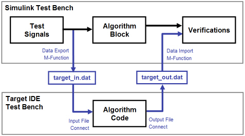
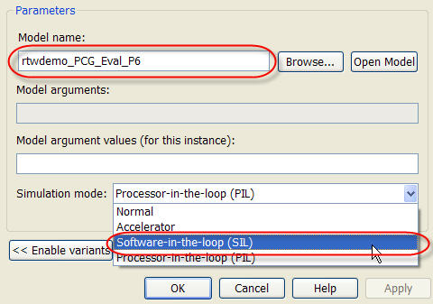
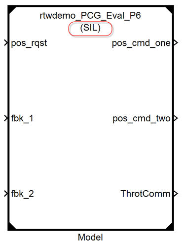
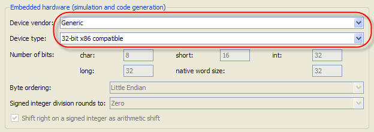
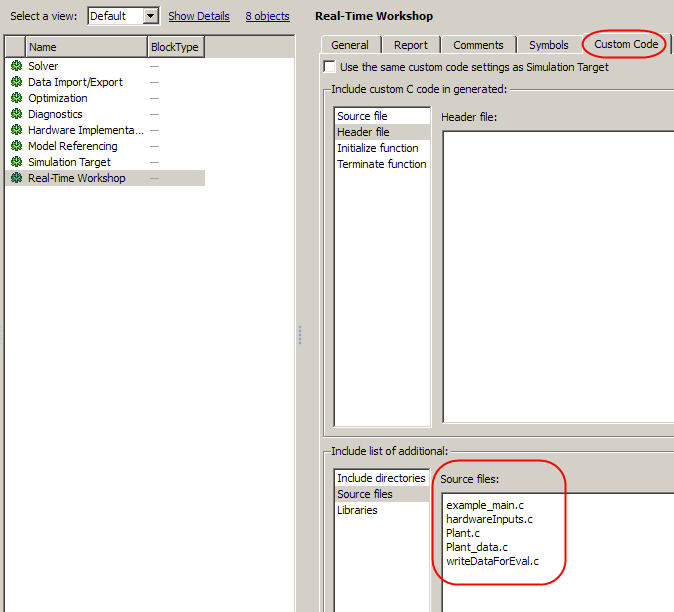

生成したコードのテスト
概要: 生成したコードを検証する 2 つの方法として、システム レベル S-function の使用と外部環境での実行コードの使用を紹介します。
所要時間: 45 分
目的
理解する内容は次のとおりです。
- 生成したコードのテストに使用できるさまざまな方法
- 生成したコードの Simulink® 内でのテスト方法
- 生成したコードの Simulink® 外でのテスト方法
目次
生成したコードの検証方法
Simulink では、生成したコードの動作を検証するために複数のシステム テスト方法がサポートされています。
| テスト方法 | 説明 | 長所 | 短所 |
| Windows ランタイム実行ファイル | Microsoft Windows ベースの実行可能ファイルを生成し、コマンド プロンプトから実行ファイルを実行します。 |
|
|
| [ソフトウェア イン ザ ループ (SIL)] | S-function ラッパーを使用して、生成したコードを Simulink モデルにインクルード バックします。 |
|
|
| プロセッサインザループ (PIL) | 非リアルタイムのコシミュレーションを実行し、Simulink とターゲット プロセッサーでそれぞれモデルの一部 (たとえば、プラント モデルとコントローラー) を実行します。 コードはターゲット プロセッサーにダウンロードされ、ループ内プロセッサーはコシミュレーション中、Simulink とターゲット間の信号の通信を処理します。 |
|
|
| ターゲット上のラピッド プロトタイピング | 生成したコードをターゲット プロセッサー上でフル システムの一部として実行します。 |
|
|
| エクスターナル モード | 生成したコードをターゲット プロセッサー上でフル システムの一部として実行します。 |
|
|
テスト データの再利用: テスト ベクトルのインポート/エクスポート
このデモでは、前のモジュールでも同じテスト データを使用しました。ユニットのテストは Simulink で行ったため、簡単でした。テスト データは Simulink 環境の外でも再利用できます。このタスクを実行するには、次の手順を行います。
- Simulink データをファイルに保存します。
- システム コードがアクセスできる形式でデータをフォーマットします。
- データ ファイルをシステム コード プロシージャの一部として読み込みます。
同様にして、外部環境からのデータが MATLAB® が読み込めるフォーマットで保存されていれば、テスト環境を再利用することができます。この例では、ファイル hardwareInputs.c にはテスト ハーネス モデルの Signal Builder ブロックからの出力データが含まれています。

ソフトウェアインザループによるテスト (Model ブロック SIL)
Model ブロックの作成と SIL 用の設定
Simulink は Model ブロックからコードを生成し、そのコードを S-Function にラップし、ソフトウェアインザループ テストのためにこの S-Function をモデル内に戻すことができます。
テスト ハーネスは Model ブロックを使用して、ソフトウェアインザループ テストを実行するモデルにアクセスします。
- Model ブロックを右クリックし、[ModelReference パラメーター] を選択します。
- 次のダイアログのように、[モデル名] フィールドにテスト対象のモデル名を入力します。
- 次のダイアログのように、[シミュレーションモード] フィールドで [ソフトウェアインザループ (SIL)] を選択します。

Model ブロックを作成し、SIL 操作用に設定すると、ブロックに (SIL) タグが付きます。

SIL 用の Model ブロック モデルの設定
次に、Model ブロック モデルにいくつかの設定を行う必要があります。
- モデル エクスプローラーを開き、Model ブロック モデルに移動します。
- [モデルの階層] ペインで [設定] をクリックします。
- [コンテンツ] ペインで [ハードウェア実行] をクリックします。
- [デバイスのベンダー] フィールドで [一般] を選択し、[デバイス タイプ] フィールドで [32-ビット x86 互換] を選択します。 
これでシミュレーションを開始する準備が整いました。
Model ブロック SIL の実行
テスト ハーネス モデルに修正を加えて再利用します。Model ブロックは、前の手順と同様に SIL 用に設定されています。
生成したコードの実行結果は、シミュレーション結果と同じになっています。

テスト ベクトルのインポート/エクスポートによるテストのためのシステム設定
このモジュールでは、「生成したコードを外部環境に統合」の統合の例題を拡張します。このケースでは、example_main.c はシミュレートされたハードウェア I/O を持っています。
拡張された example_main.c ファイルは次の実行順で構成されています。
- データの初期化 (1 回)
while < endTime - シミュレートされたハードウェア入力の読み込み
- PI_cnrl_1
- PI_ctrl_2
- Pos_Command_Arbitration
- シミュレートされたハードウェア出力 end while の書き出し
入力テスト データは 2 つの関数 plant および hardwareInputs で得られます。
| ファイル名 | 関数シグネチャ | コメント |
| Plant.c | void Plant(void) | テスト ハーネスのプラント セクションから生成されたコード。 スロットル コマンドに対するスロットル本体の応答をシミュレートする。 |
| HardwareInputs.c | void hardwareInputs(void) | pos_req 信号を与えて、Input_Signal_Scaling サブシステムからプラント フィードバック信号にノイズを追加する。 |
データ ログはハンド コードされた関数 WriteDataForEval.c により提供されます。この関数はテストの完了時に 1 回実行されます。テスト データはファイル PCG_Eval_ExternSimData.m に書き込まれます。MATLAB プログラムを MATLAB 環境に読み込んで、シミュレーション データと比較することができます。
これらの追加ファイルを有効にするには、[Real-Time Workshop] > [カスタム コード] > [追加で含ませるリスト:] > [ソース ファイル] ダイアログにファイルを追加します。

テスト ベクトルのインポート/エクスポート (Eclipse 環境) によるテスト
Eclipse 環境で実行可能ファイルをビルドする前に、S-function インターフェイスを使用せずにコードを再生成します。
Eclipse および GCC のインストール方法および使用方法については、「Cygwin と Eclipse のインストールと使い方」を参照してください。
次の操作を行うと、このモジュールのファイルが自動的にインストールされます。
手動でファイルをインストールするには、以下を行います。
- ビルド ディレクトリ (Eclipse_Build_P6) を作成します。
- ファイル rtwdemo_PCG_Eval_P6.zip をビルド ディレクトリに解凍します。
- 以下のファイルは example_main.c. で置き換えられるために削除します。
- rtwdemo_PCG_Eval_P6.c
- ert_main.c
- rt_logging.c
Eclipse で制御コードを実行すると、ファイル eclipseData.m が生成されます。このファイルはファイル writeDataForEval.c で生成されたものです。データを読み込み、プロット ルーチンを実行すると、Eclipse の実行によるデータと標準のテスト ハーネスとを比較することができます。